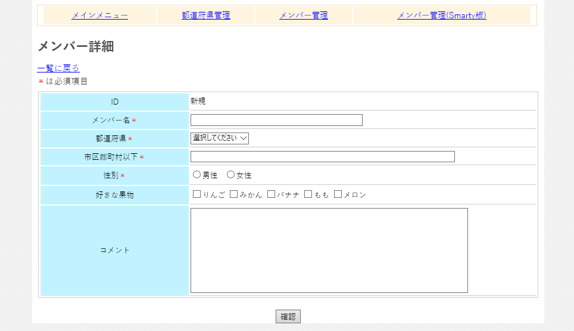

図0100b
構造的にはprefecture_detail.phpと同じですが、こちらにはいろんなコントロール（入力領域）があります。
function echo_prefecture_select(){
global $err_array;
if(!isset($_POST['prefecture_id']))$_POST['prefecture_id'] = 0;
//都道府県の一覧を取得
$prefecture_obj = new cprefecture();
$allcount = $prefecture_obj->get_all_count(false);
$prefecture_rows = $prefecture_obj->get_all(false,0,$allcount);
$tgt = new cselect('prefecture_id');
$tgt->add(0,'選択してください',$_POST['prefecture_id'] == 0);
foreach($prefecture_rows as $key => $val){
$tgt->add($val['prefecture_id'],$val['prefecture_name'],$val['prefecture_id'] == $_POST['prefecture_id']);
}
$tgt->show($_POST['func'] == 'conf');
if(isset($err_array['prefecture_id'])){
echo '<br /><span class="red">'
. cutil::ret2br($err_array['prefecture_id'])
. '</span>';
}
}
if(!isset($_POST['prefecture_id']))$_POST['prefecture_id'] = 0;
$tgt = new cselect('prefecture_id');
$tgt->add(0,'選択してください',$_POST['prefecture_id'] == 0);
foreach($prefecture_rows as $key => $val){
$tgt->add($val['prefecture_id'],$val['prefecture_name'],$val['prefecture_id'] == $_POST['prefecture_id']);
}
function echo_member_gender_radio(){
global $err_array;
if(!isset($_POST['member_gender']))$_POST['member_gender'] = 0;
//メンバー性別のラジオボタンを作成
$tgt = new cradio('member_gender');
$tgt->add(1,'男性',$_POST['member_gender'] == 1);
$tgt->add(2,'女性',$_POST['member_gender'] == 2);
$tgt->show($_POST['func'] == 'conf',' ');
if(isset($err_array['member_gender'])){
echo '<br /><span class="red">'
. cutil::ret2br($err_array['member_gender'])
. '</span>';
}
}
function echo_member_comment(){
global $err_array;
if(!isset($_POST['member_comment']))$_POST['member_comment'] = '';
$tgt = new ctextarea('member_comment',$_POST['member_comment'],'cols="70" rows="10"');
$tgt->show($_POST['func'] == 'conf');
}
if($member_id > 0){
if(($_POST = $member_obj->get_tgt(false,$member_id)) === false){
$_POST['func'] = 'new';
}
else{
$_POST['fruits'] = $member_obj->get_all_fruits_match(false,$member_id);
$_POST['func'] = 'edit';
}
}
function echo_fruits_match_check(){
global $err_array;
global $member_id;
//フルーツの一覧を取得
$fruits_obj = new cfruits();
$fruits_rows = $fruits_obj->get_all(false);
//果物のチェックボックスを作成
$tgt = new cchkbox('fruits[]');
if(!isset($_POST['fruits']))$_POST['fruits'] = array();
foreach($fruits_rows as $key => $val){
$check = false;
if(array_search($val['fruits_id'],$_POST['fruits']) !== false){
$check = true;
}
$tgt->add($val['fruits_id'],$val['fruits_name'],$check);
}
$tgt->show($_POST['func'] == 'conf',' ');
}
$fruits_obj = new cfruits();
$fruits_rows = $fruits_obj->get_all(false);
$tgt = new cchkbox('fruits[]');
if(!isset($_POST['fruits']))$_POST['fruits'] = array();
foreach($fruits_rows as $key => $val){
$check = false;
if(array_search($val['fruits_id'],$_POST['fruits']) !== false){
$check = true;
}
$tgt->add($val['fruits_id'],$val['fruits_name'],$check);
}
$tgt->show($_POST['func'] == 'conf',' ');
function regist(){
global $member_id;
$dataarr = array();
$dataarr['member_name'] = (string)$_POST['member_name'];
$dataarr['prefecture_id'] = (int)$_POST['prefecture_id'];
$dataarr['member_address'] = (string)$_POST['member_address'];
$dataarr['member_gender'] = (int)$_POST['member_gender'];
$dataarr['member_comment'] = (string)$_POST['member_comment'];
$chenge = new cchange_ex();
if($member_id > 0){
$chenge->update('member',$dataarr,'member_id=' . $member_id);
regist_fruits($member_id);
cutil::redirect_exit($_SERVER['PHP_SELF'] . '?mid=' . $member_id);
}
else{
$mid = $chenge->insert('member',$dataarr);
regist_fruits($mid);
cutil::redirect_exit($_SERVER['PHP_SELF'] . '?mid=' . $mid);
}
}
$dataarr['member_name'] = (string)$_POST['member_name'];
$dataarr['prefecture_id'] = (int)$_POST['prefecture_id'];
//......
function regist_fruits($member_id){
$chenge = new cchange_ex();
$chenge->delete("fruits_match","member_id=" . $member_id);
foreach($_POST['fruits'] as $key => $val){
$dataarr = array();
$dataarr['member_id'] = (int)$member_id;
$dataarr['fruits_id'] = (int)$val;
$chenge->insert('fruits_match',$dataarr);
}
}
$chenge->delete("fruits_match","member_id=" . $member_id);
foreach($_POST['fruits'] as $key => $val){
$dataarr = array();
$dataarr['member_id'] = (int)$member_id;
$dataarr['fruits_id'] = (int)$val;
$chenge->insert('fruits_match',$dataarr);
}